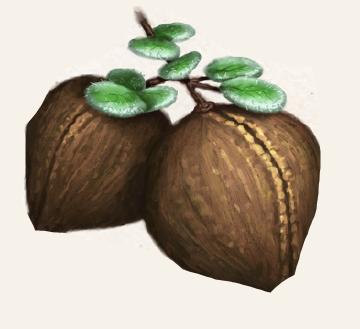

Bis zu drei Schritt hoch wächst der Yaganstrauch. Mit seinen münzförmigen grünsilbernen Blättchen und den faustgroßen braunen Nüssen ist er sehr ansehnlich. Doch ist Vorsicht geboten, denn die ledrigen Blätter tragen Nesselhaken, die beim Pflücken der Nuss unweigerlich in Haut und Stoff dringen. Verursachen die Brennhaare der aranischen Sträucher jedoch nur lästiges Brennen, sind bei maraskanischen hässliche, bisweilen nässende Quaddeln die Folge. An einem Strauch wachsen bis zu einem Dutzend Nüsse, von denen sowohl das Fleisch als auch der spindelförmige rote Kern nutzbar sind. Aus dem Fleisch der Nuss lässt sich ein Öl pressen, das die Ausdauer des Anwenders steigert. Es ist auch möglich, Tiere in den Genuss des Öls kommen zu lassen, indem das Futter damit getränkt wird. Wie zwergische, elfische und menschliche Nutznießer auch, sind sie dann ausdauernder, müssen aber ebenfalls die Nachwehen erdulden. Denn am Tag nach der Einnahme ist die Ausdauer des Anwenders merklich gemindert. Ein Gemisch aus Yaganöl, Boronwein und anderen Rauschmitteln steigert überdies als Aufputschmittel die Handlungsfähigkeit.
Der Kern ist ebenfalls essbar und sättigt Humanoide für drei Tage, Achaz jedoch nur für 36 Stunden. Er ist sehr scharf und es bedarf einer gewissen Selbstbeherrschung, ihn zu verspeisen. Misslingt der Versuch, leidet der Betreffende zunächst an Atemnot, dann einige Stunden an der irrationalen Angst, plötzlich sterben zu müssen, sowie an Tränenfluss. Aufgrund der Heftigkeit dieser Auswirkungen muss ein Vierteljahr vergehen, ehe der Anwender erneut versuchen kann, einen Kern zu essen. In der Alchimie findet der Kern der Yagan-Nuss darüber hinaus Anwendung als Zutat des Schlaftrunks und in verschiedenen Aufputschmitteln.
Verbreitung:
Landschaftstyp: Wälder, Gebirge, Maraskan
Regionen: Mittelländische Wälder (yaquirisches Klima), Immergrüne Wälder (Südosten), Südliche Gebirge, insbesondere Ostaranien und westmaraskanische Küste
Suchschwierigkeit: -2
Bestimmungsschwierigkeit: -1
Anwendungen: 1/2/2/3/3/3
Wirkung:
Roh:
Berührung: 1 SP (Nesselblätter, aranische Pflanze), 1W3+1 SP (Nesselblätter, maraskanische Pflanze)
Einatmung: keine
Verzehr: Beim Verzehr ist eine Probe auf Willenskraft (Bedrohungen standhalten) -2 nötig.
Bei Misslingen leidet der Anwender für 5 Minuten an Atemlosigkeit (1 Stufe Betäubung), für 6 Stunden an Vernichtungsängsten (3 Stufen Furcht) und für 7 Stunden an Tränenfluss (Sichtmodifikator Stufe 1).
Die Auswirkungen sind so heftig, dass er erst nach einem Vierteljahr wieder versuchen kann, eine Yagannuss zu essen.
Der Verzehr sättigt die meisten Lebewesen für drei Tage, Achaz hingegen nur für 36 Stunden.
Aus der Nuss gepresstes Öl steigert die Ausdauer des Anwenders.
Die Konstitution ist nach Verzehr des Öls bei allen Fertigkeitsproben einen Tag lang um 1 erhöht.
Am nächsten Tag erhält der Anwender dafür 1 Stufe Betäubung.
Verarbeitet: siehe Rezepte
Preis: 6 / 6,5 Silbertaler
Rezepte:
Elixiere: Schlaftrunk
Alchimistische Rauschmittel: Aufputschmittel
Volksbrauchtum:
Die Nebenwirkungen der Yagannuss können mit Übung unterdrückt werden.
Wer auf Maraskan oder in den Tulamidenlanden aufgewachsen ist, scheint nicht selten gegen die Schärfe des Kerns immun zu sein.
Die leeren Schalen von verzehrten Nüssen werden gelegentlich als Windspiel über die Bettstatt gehängt, um Ausdauer gleichsam zu symbolisieren und herbeizurufen und Leidenschaft zu entfachen.
Haltbarkeit:
Roh: siehe Haltbarmachung